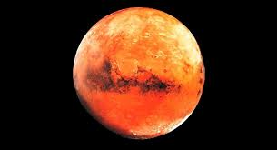
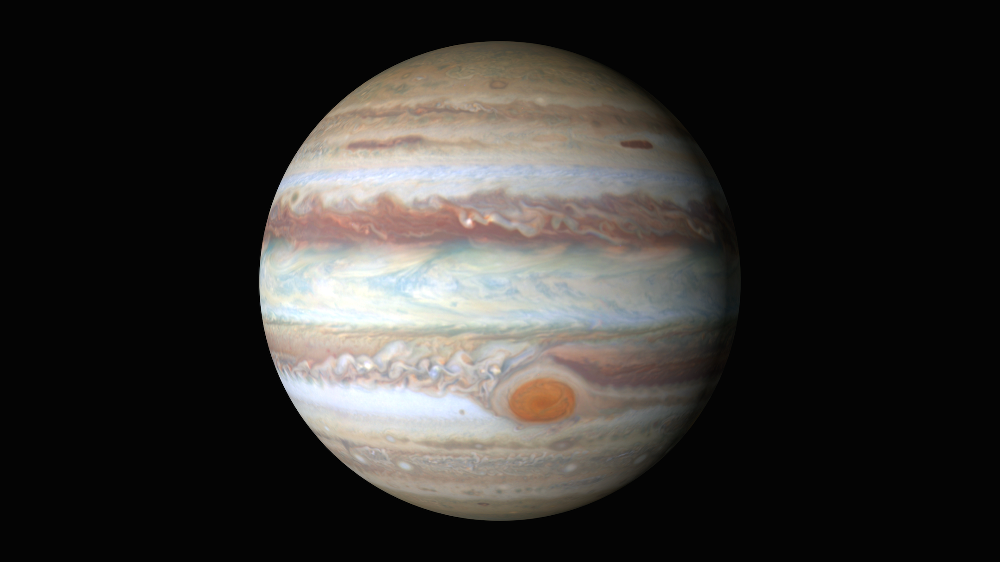
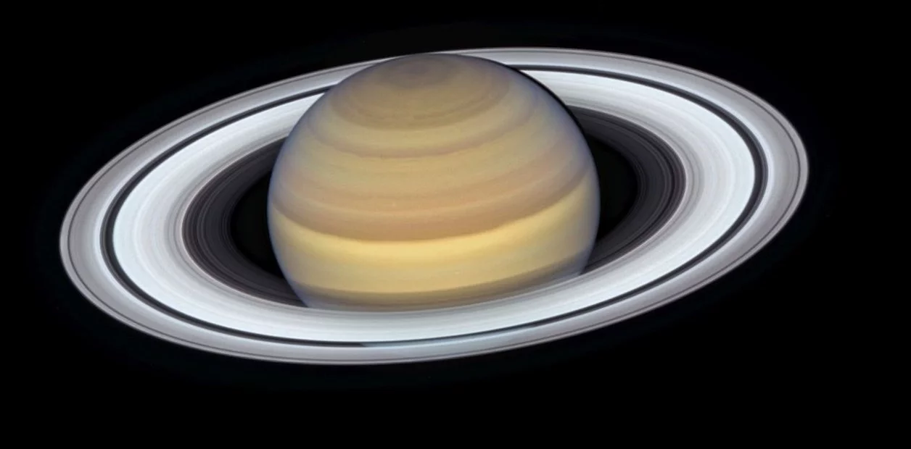

Marte es el cuarto planeta en orden
de distancia al Sol y el segundo más pequeño
del sistema solar, después de Mercurio.
Recibió su nombre en homenaje al dios de la
guerra de la mitología romana (Ares en la
mitología griega), y también es conocido
como «el planeta rojo»3 4 debido a la apariencia
rojiza5 que le confiere el óxido de hierro
predominante en su superficie. Marte es el
planeta interior más alejado del Sol. Sus
características superficiales recuerdan tanto
a los cráteres de la Luna como a los valles,
desiertos y casquetes polares de la Tierra.
JUPITER

Júpiter es un cuerpo masivo gaseoso,
formado principalmente por hidrógeno y helio,
carente de una superficie interior definida.
Entre los detalles atmosféricos es notable la
Gran Mancha Roja (un enorme anticiclón situado
en las latitudes tropicales del hemisferio sur),
la estructura de nubes en bandas oscuras y zonas
brillantes, y la dinámica atmosférica global
determinada por intensos vientos zonales
alternantes en latitud y con velocidades de hasta
140 m/s (504 km/h).
SATURNO

Saturno es el sexto planeta del sistema solar contando
desde el Sol, el segundo en tamaño y masa después de
Júpiter y el único con un sistema de anillos visible
desde la Tierra. Su nombre proviene del dios romano
Saturno. Forma parte de los denominados planetas
exteriores o gaseosos. El aspecto más característico
de Saturno son sus brillantes anillos. Antes de la
invención del telescopio, Saturno era el más lejano
de los planetas conocidos y, a simple vista, no parecía
luminoso ni interesante.